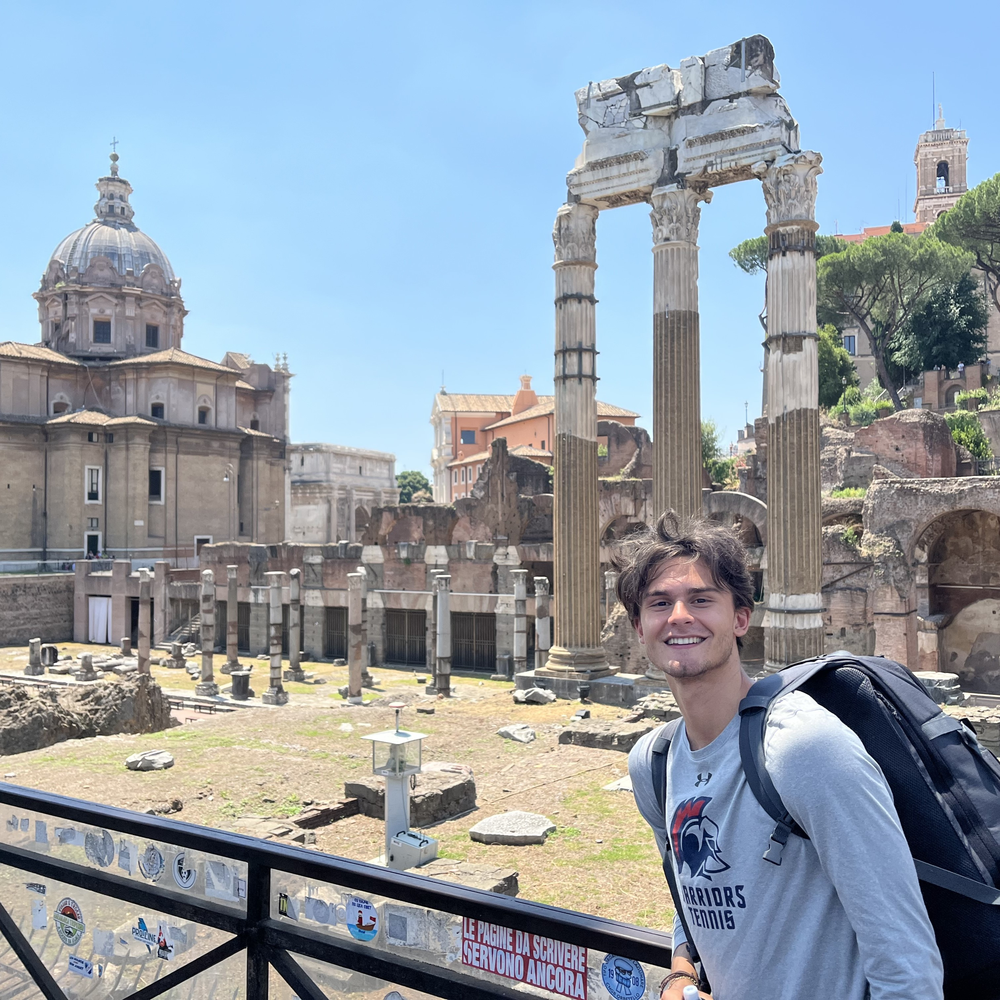
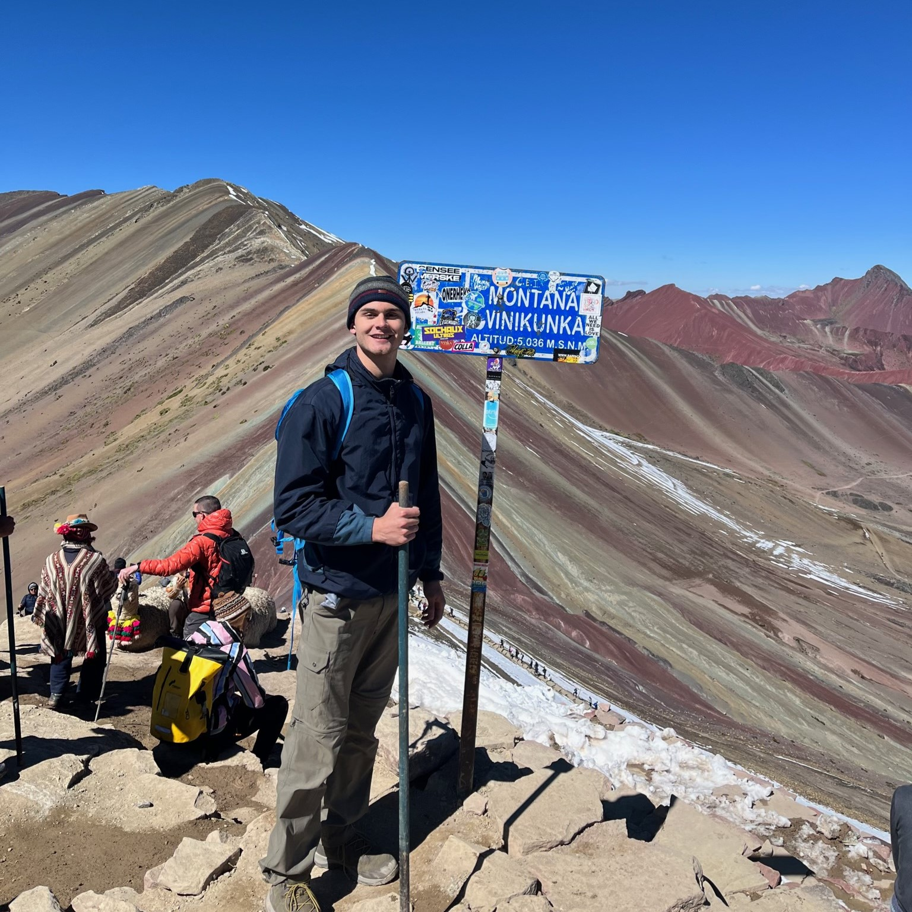
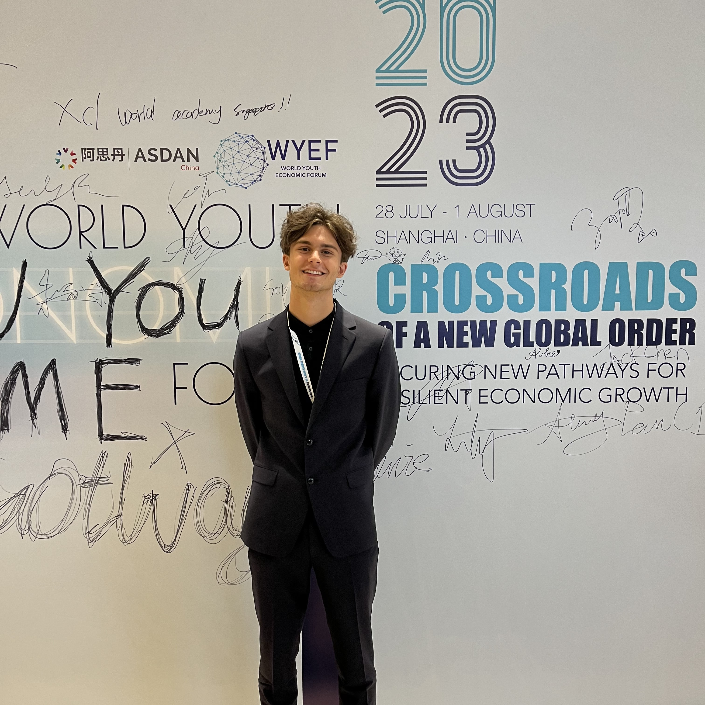
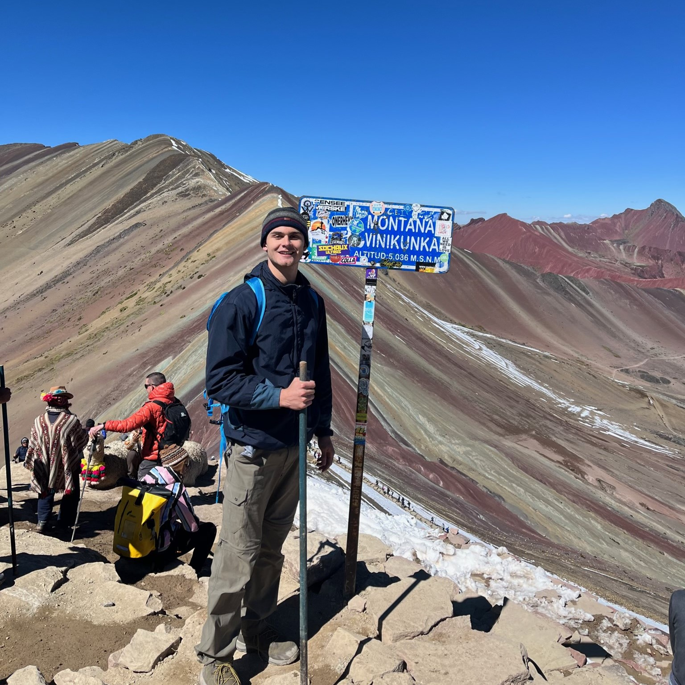
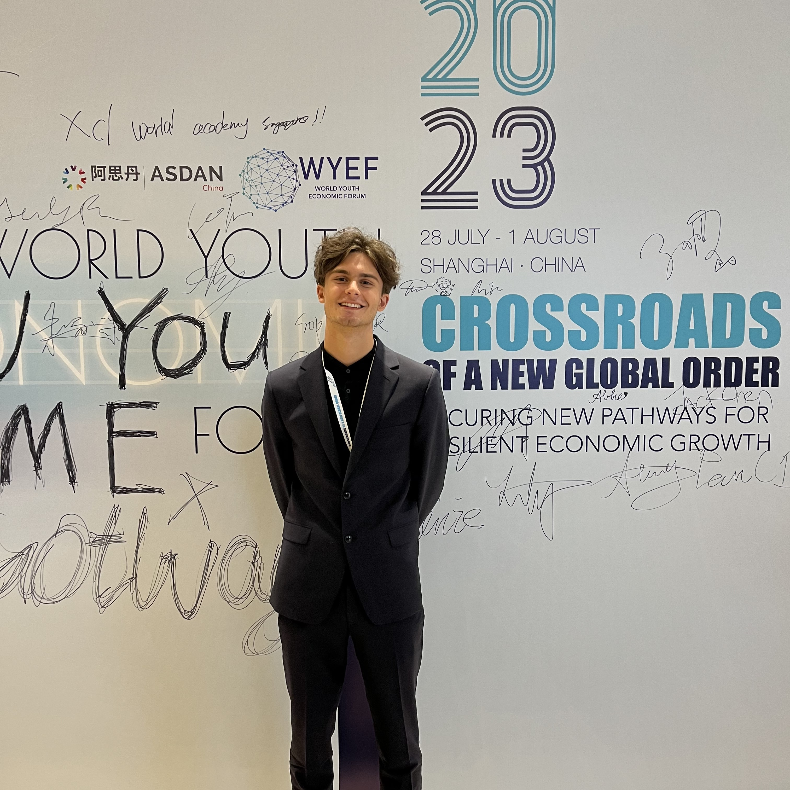
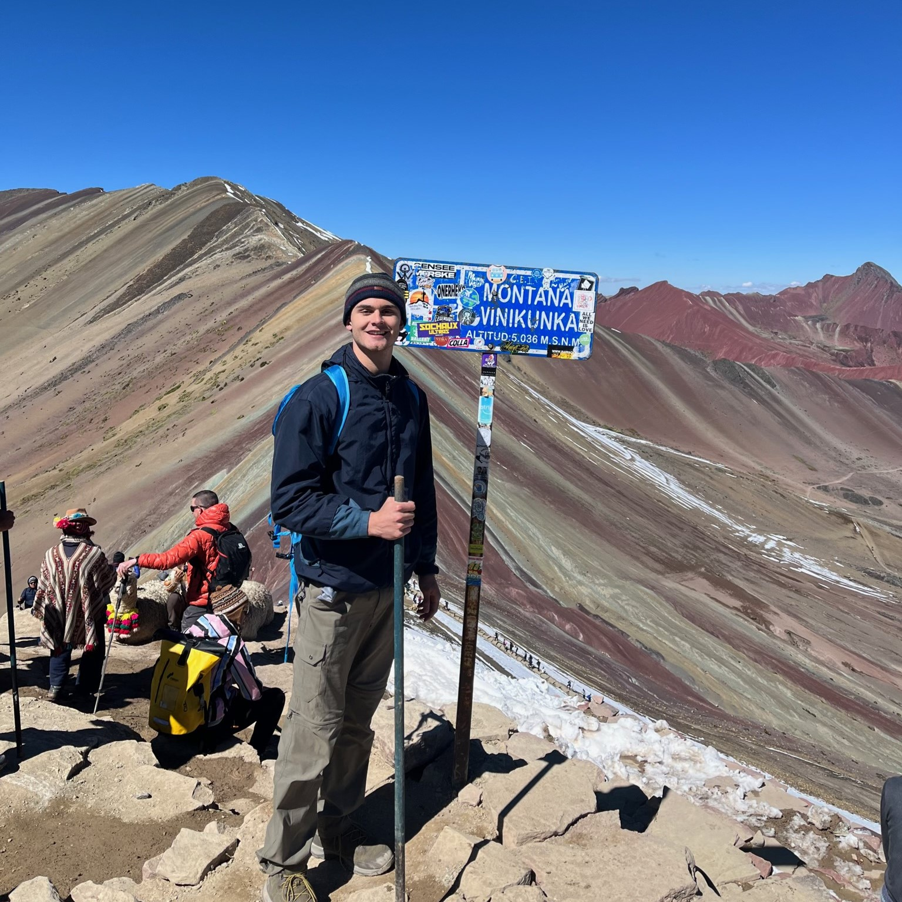
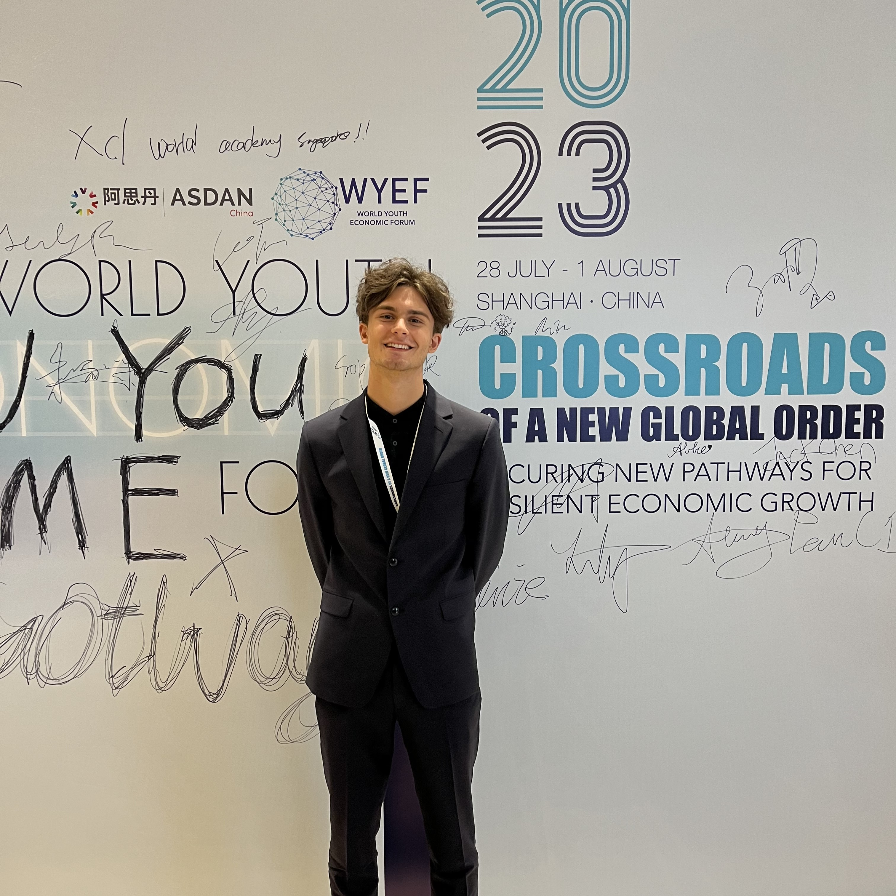

TEO DIMOV
Hey, I'm Teo!
I’m currently building instant, at-home health diagnostics & medication with Organ.
I also run the Yale Entrepreneurial Society, scout for Impact First, research topology at Krishnaswamy Lab, and consult at YUCG.
Last summer, I solo backpacked for 80 days across 32 cities, 14 countries, and 5 continents—self organized and self funded. My trip ended in Shanghai, where I spoke in front of 1300 students and taught a committee on developmental entrepreneurship.
I also built LAUNCH — a pre-orientation program for 120 incoming freshmen.

 




